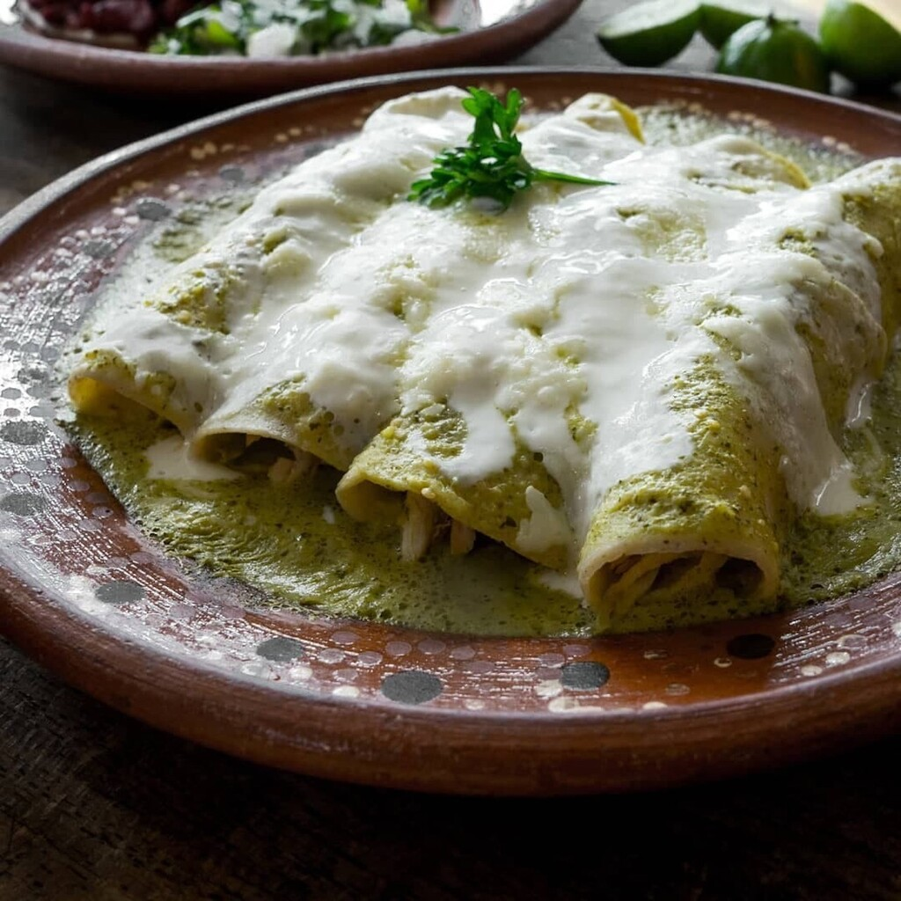

Enchiladas verdes

Delicioso platillo mexicano a base de tortillas, salsa verde y pollo.
Se trata de una tortilla enrollada o doblada rellena de pollo o incluso otra carne o queso, a su gusto, y bañada en una salsa verde, crema, queso, cebolla y cilantro.
Aunque también las hay rojas, en salsa morita, suizas... todo depende de el sabor que le quieras dar!
Ingredients
- Tortillas
- 1 Pechuga deshebrada
- 1 Litro de Caldo de pollo
- 3 Chiles verdes o serranos
- 8 Tomates
- Cilantro picado al gusto
- 1 Diente de ajo
- Aceite al gusto
- Queso blanco
- Crema
- Sal al gusto
Steps
- Hierve los tomates, chile serrano, ajo y cebolla en el caldo de pollo durante 10 minutos y licua con el cilantro. Salpimenta y conserva caliente.
- Frie ligeramente las tortillas en el aceite.
- Sumerge las toritillas en la salsa previamente hecha.
- Rellena con el pollo y doblalas o enrollalas.
- Baña con más salsa a tu gusto.
- Decora con la crema, queso, cebolla y cilantro picado.